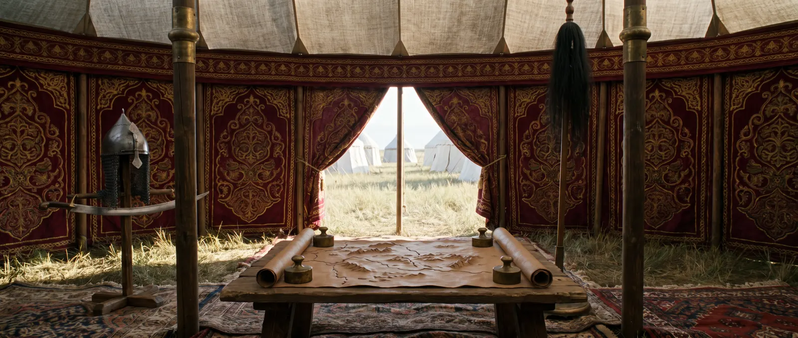

क्लाविखो: समरक़ंद में राजदूत
कास्तीली सरदार जो 1404 में तीन महीने तैमूर के दरबार में रहा और उसकी राजधानी का सर्वश्रेष्ठ यूरोपीय वर्णन छोड़ गया।

कास्तीया के राजा एनरिके तृतीय के दरबारी रुई गोंज़ालेस दे क्लाविखो ने अंकारा की लड़ाई के बाद तैमूर के पास दूतावास का नेतृत्व किया: कास्तीली उस्मानियों के विरुद्ध मित्र खोज रहे थे। दूतावास 22 मई 1403 को काडिस से रवाना हुआ, कॉन्स्टेंटिनोपल में सम्राट मानुएल द्वितीय के यहाँ सर्दियाँ बिताईं, 11 अप्रैल 1404 को ट्रेबिज़ोंड में उतरा और आगे तैमूर के पदचिह्नों पर एर्ज़िंजान, तबरेज़, तेहरान, मशहद, बल्ख़ और तिर्मिज़ होकर चला। 4 सितंबर 1404 को राजदूत समरक़ंद के पास पहुँचे।
उसने क्या देखा
क्लाविखो ने तैमूर को शहर के बाहर के बाग़ों में पाया: पहली भेंट महल वाले बाग़ में हुई, प्रशिक्षित रंगे हुए हाथियों और रत्नजड़ित रेशमी तंबुओं के बीच। उसने लगातार बनती और फिर से बनती राजधानी, अंकारा की जीत के उत्सव, चीन पर नियोजित अभियान से पहले कुरुलताई, और वह मस्जिद वर्णित की जिसे तैमूर ने इसलिए फिर से बनवाने का आदेश दिया कि उसका द्वार नीचा लगा। रास्ते में राजदूत तैमूर के गृहनगर केश में भी गए, जहाँ अक़-सराय महल पूरा किया जा रहा था।
तैमूर की बीमारी ने प्रस्थान रोका; 21 नवंबर 1404 को दूतावास वापस चला और तबरेज़ में अटक गया — वहीं उसे फ़रवरी 1405 में तैमूर की मृत्यु की ख़बर मिली। घर, एनरिके के दरबार में क्लाविखो 24 मार्च 1406 को लौटा और 2 अप्रैल 1412 को मैड्रिड में मरा।
पुस्तक
उसकी रिपोर्ट, “तामरलेन के पास दूतावास”, 1582 में छपी, अंग्रेज़ी में 1859 में आई। यह तैमूर के दरबार पर बाहर से — ऐसे व्यक्ति की आँखों से जो न उसकी प्रजा था न शत्रु — कुछ गिने-चुने दृष्टिकोणों में से एक है। पुस्तक में शतरंज नहीं है; पर जो दावतें, बाग़ और तंबू वह वर्णित करता है, वही वह दरबार है जहाँ महान शतरंज खेली जाती थी।